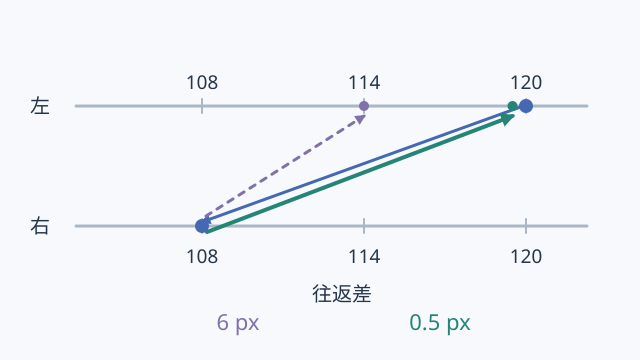

先读懂一幅图中的像素，再学习两台相机怎样测距、多种传感器怎样对齐。
从像素的内存布局、亮度边缘到跨帧判断，建立最小的视觉测量流程。
理解像素格式、行跨度和缓冲区所有权，排查花屏、偏色与跨线程图像串帧。
把一块图像压成一条亮度变化曲线，从峰的位置找液面，再把裁剪坐标换回原图。
用候选线的位置窗口区分“短时抖动小”和“位置已经对准”。
从两幅图的位移算距离，再检查同步与匹配，最后用已知尺寸估计姿态。
左右图像中同一点的横向偏移可以换算成深度。距离越远，一像素误差的代价越大。
区分触发、曝光、设备时间戳和到达时间，估算时间差怎样污染立体匹配。

从左图出发找到右图，再从右图走回来，检查同一个像素能否回到起点。
四个检测角点提供图像位置，标记的真实边长为距离提供尺度。
让相机、IMU 与雷达对同一个位置和时刻达成一致，再读异步亮度事件。
从一段转动和一个三维点开始，弄清联合标定要估计的旋转、平移与时差。
从一组三维圆心估计刚体变换，再用自然场景中的边缘检查投影。
读懂一个事件的四个字段，再选择时间窗，把异步观测积成可看的轮廓。
常用关键词